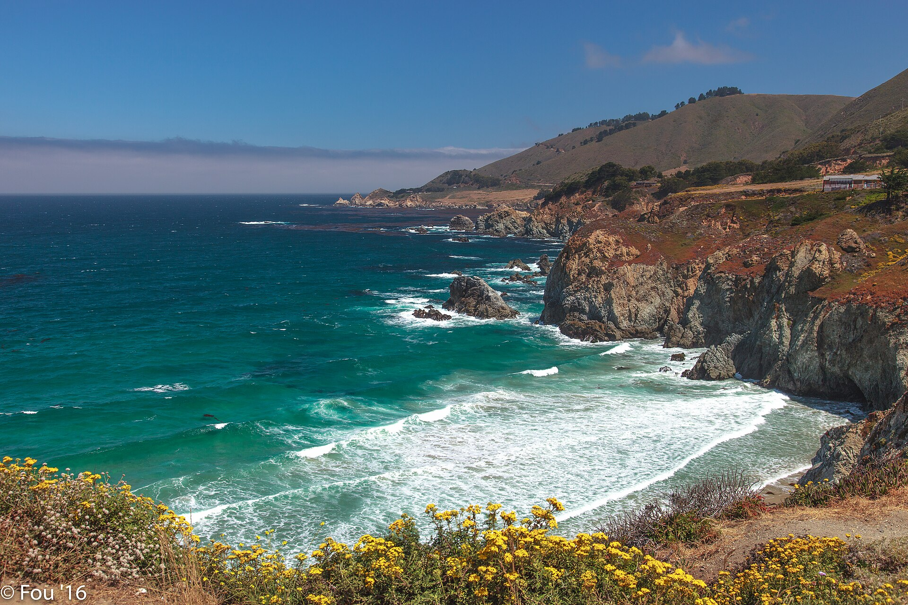

Picture

What kind of photos are good to encode using JPEG?
Are good for regular photos, websites and social media since it can make the file much smaller while keeping good image quality
What kind of photos are good to encode using GIF?
Usually good for simple images or short animations. It supports animation and works well with images that don't need many colors(Lossless).
What is unique about the PNG format?
PNG format is unique because it supports transparent backgrounds while maintaining high image quality such as logos.
How do you resize your photo to the size it should be displayed?
By changing its width and height to the dimensions you want it to appear.
Why should you resize photos using photo editing software instead of resizing it using CSS?
Photo editing software makes the actual file smaller hence the web page loads faster and uses less data. CSS only chnages how large the image looks on the webpage but but the original large image still has to be downloaded.